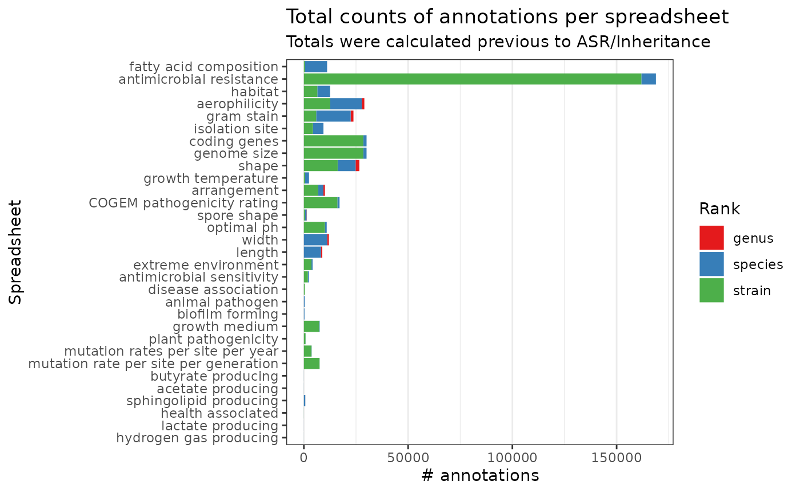

Import data
phys <- map(physiologies(), as_tibble)
phys[['fatty acid composition']] <- fattyAcidComposition()Total counts
total_counts <- phys |>
map(counts_total) |>
bind_rows(.id = 'spreadsheet') |>
arrange(n)
total_counts_order <- total_counts |>
pull(spreadsheet)
rank_counts <- phys |>
map(counts_per_rank) |>
bind_rows(.id = 'spreadsheet') |>
mutate(
spreadsheet = factor(spreadsheet, levels = total_counts_order),
Rank = factor(Rank, levels = c('genus', 'species', 'strain'))
)
DT::datatable(
data = total_counts, filter = 'top'
)
rank_counts |>
ggplot(aes(spreadsheet, n)) +
geom_col(aes(fill = Rank)) +
labs(
title = 'Total counts of annotations per spreadsheet',
subtitle = 'Totals were calculated previous to ASR/Inheritance',
x = 'Spreadsheet', y = '# annotations'
) +
scale_fill_brewer(type = 'qual', palette = 'Set1') +
theme_bw() +
theme(
panel.grid.major.y = element_blank()
) +
coord_flip()
Antimicrobial resistance are marked as species, but it’s actually strains.
Propagate with majority vote
phys_propagate <- phys |>
map(propagate)
#> Warning in .f(.x[[i]], ...): NO propagation for this dataset
#> Warning in .f(.x[[i]], ...): NO propagation for this dataset
#> Warning in .f(.x[[i]], ...): NO propagation for this dataset
#> Warning: Nothing to do here.
#> Warning: Nothing to do here.
#> Warning in .f(.x[[i]], ...): NO propagation for this datasetCounts after majority vote
phys_propagate_total_counts <- phys_propagate |>
map(counts_total) |>
bind_rows(.id = 'spreadsheet') |>
arrange(n)
phys_prop_order <- phys_propagate_total_counts$spreadsheet
phys_prop_ranks <- phys_propagate |>
map(counts_per_rank) |>
bind_rows(.id = 'spreadsheet') |>
mutate(
spreadsheet = factor(spreadsheet, levels = total_counts_order),
Rank = factor(Rank, levels = c('genus', 'species', 'strain'))
)
DT::datatable(
data = phys_propagate_total_counts, filter = 'top'
)
phys_prop_ranks |>
ggplot(aes(spreadsheet, n)) +
geom_col(aes(fill = Rank)) +
labs(
title = 'Total counts of annotations per spreadsheet',
subtitle = 'Totals were calculated previous to ASR/Inheritance',
x = 'Spreadsheet', y = '# annotations'
) +
scale_fill_brewer(type = 'qual', palette = 'Set1') +
theme_bw() +
theme(
panel.grid.major.y = element_blank()
) +
coord_flip()
Comparing counts
Total numbers before ASR:
Total numbers after ASR (majority vote):
Comparing counts per spreadsheet:
total_counts <- total_counts |>
mutate(method = 'before_asr') |>
relocate(method)
phys_propagate_total_counts <- phys_propagate_total_counts |>
mutate(method = 'majority_vote') |>
relocate(method)
all <- bind_rows(total_counts, phys_propagate_total_counts) |>
mutate(spreadsheet = factor(spreadsheet, levels = total_counts_order))
DT::datatable(
data = all, filter = 'top'
)A plot:
all |>
ggplot(aes(spreadsheet, n)) +
geom_col(aes(fill = method), position = 'dodge') +
labs(
title = 'Comparison of total counts of annotations
per spreadsheet before and after asr/inheritance',
subtitle = 'Majority vote counts include
original annotations + propagated',
x = 'Spreadsheet', y = '# annotations'
) +
scale_fill_brewer(type = 'qual', palette = 'Set1') +
theme_bw() +
theme(
panel.grid.major.y = element_blank()
) +
coord_flip()
Session info
sessionInfo()
#> R version 4.2.1 (2022-06-23)
#> Platform: x86_64-pc-linux-gnu (64-bit)
#> Running under: Pop!_OS 22.04 LTS
#>
#> Matrix products: default
#> BLAS: /usr/lib/x86_64-linux-gnu/blas/libblas.so.3.10.0
#> LAPACK: /usr/lib/x86_64-linux-gnu/lapack/liblapack.so.3.10.0
#>
#> locale:
#> [1] LC_CTYPE=en_US.UTF-8 LC_NUMERIC=C
#> [3] LC_TIME=en_US.UTF-8 LC_COLLATE=en_US.UTF-8
#> [5] LC_MONETARY=en_US.UTF-8 LC_MESSAGES=en_US.UTF-8
#> [7] LC_PAPER=en_US.UTF-8 LC_NAME=C
#> [9] LC_ADDRESS=C LC_TELEPHONE=C
#> [11] LC_MEASUREMENT=en_US.UTF-8 LC_IDENTIFICATION=C
#>
#> attached base packages:
#> [1] stats graphics grDevices utils datasets methods base
#>
#> other attached packages:
#> [1] ggplot2_3.3.6 tidyr_1.2.1 purrr_0.3.4 dplyr_1.0.10
#> [5] bugphyzz_0.0.1.3 taxPPro_0.1.0
#>
#> loaded via a namespace (and not attached):
#> [1] sass_0.4.2 vroom_1.5.7 bit64_4.0.5 jsonlite_1.8.0
#> [5] foreach_1.5.2 bold_1.2.0 bslib_0.4.0 assertthat_0.2.1
#> [9] highr_0.9 blob_1.2.3 taxize_0.9.100 yaml_2.3.5
#> [13] pillar_1.8.1 RSQLite_2.2.17 lattice_0.20-45 glue_1.6.2
#> [17] uuid_1.1-0 digest_0.6.29 RColorBrewer_1.1-3 colorspace_2.0-3
#> [21] htmltools_0.5.3 plyr_1.8.7 pkgconfig_2.0.3 httpcode_0.3.0
#> [25] scales_1.2.1 tzdb_0.3.0 tibble_3.1.8 farver_2.1.1
#> [29] generics_0.1.3 DT_0.25 ellipsis_0.3.2 cachem_1.0.6
#> [33] withr_2.5.0 cli_3.4.0 magrittr_2.0.3 crayon_1.5.1
#> [37] memoise_2.0.1 evaluate_0.16 fs_1.5.2 fansi_1.0.3
#> [41] nlme_3.1-159 xml2_1.3.3 textshaping_0.3.6 tools_4.2.1
#> [45] data.table_1.14.2 hms_1.1.2 lifecycle_1.0.2 stringr_1.4.1
#> [49] mgsub_1.7.3 munsell_0.5.0 compiler_4.2.1 pkgdown_2.0.6
#> [53] jquerylib_0.1.4 systemfonts_1.0.4 rlang_1.0.5 taxizedb_0.3.0
#> [57] grid_4.2.1 conditionz_0.1.0 iterators_1.0.14 rstudioapi_0.14
#> [61] htmlwidgets_1.5.4 rappdirs_0.3.3 crosstalk_1.2.0 labeling_0.4.2
#> [65] rmarkdown_2.16 gtable_0.3.1 codetools_0.2-18 DBI_1.1.3
#> [69] reshape_0.8.9 curl_4.3.2 R6_2.5.1 zoo_1.8-10
#> [73] knitr_1.40 fastmap_1.1.0 bit_4.0.4 utf8_1.2.2
#> [77] rprojroot_2.0.3 ragg_1.2.2 hoardr_0.5.2 readr_2.1.2
#> [81] desc_1.4.2 ape_5.6-2 stringi_1.7.8 parallel_4.2.1
#> [85] crul_1.3 Rcpp_1.0.9 vctrs_0.4.1 dbplyr_2.2.1
#> [89] tidyselect_1.1.2 xfun_0.33